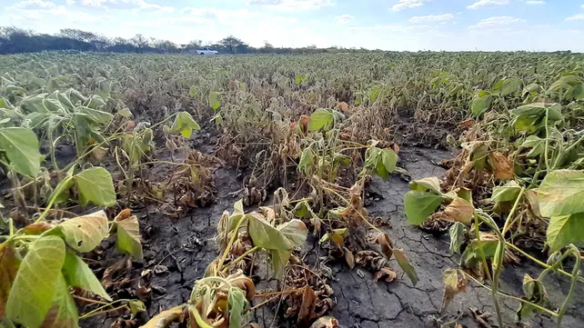
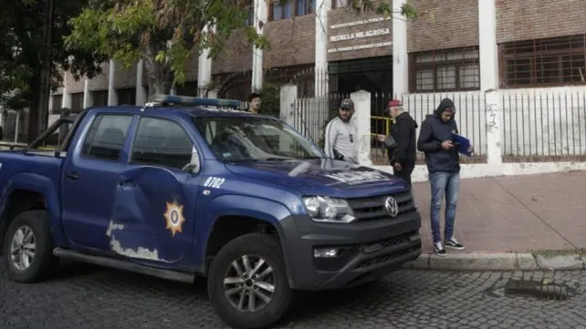
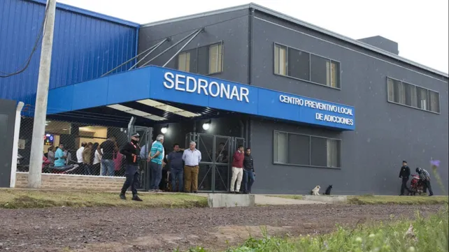

Sequía en Santa Fe: la superficie perdida de soja equivale a la del departamento General López
El ingeniero Cristian Russo, de la Bolsa de Comercio de Rosario, estimó que en el territorio santafesino se perdieron 1,2 millón de hectáreas.
Ataque sicario frente a la Medalla Milagrosa: "Los chicos deben entender la gravedad de lo que pasó"
Luis García, director del colegio frente al que intentaron matar al padre de un alumno, reclamó mayor presencia policial en el barrio.
Trabajadores de la salud mental reclaman que se regularice su situación laboral
Más de treinta operadores del Sedronar que se desempeñan desde 2014 en Rosario y Villa Gobernador Gálvez hicieron paro este martes para hacer oír sus reclamos
